A Mini Project Report
Submitted in partial fulfillment of the requirements for the award of the degree of Bachelor of Technology in <DEPARTMENT NAME>
Submitted by
<STUDENT NAME>
Roll Number: <ROLL NUMBER>
Register Number: <REGISTER NUMBER>
Under the guidance of
<GUIDE NAME>
<GUIDE DESIGNATION>
<COLLEGE NAME>
<UNIVERSITY NAME>
<ACADEMIC YEAR>
This is to certify that the Mini Project report entitled Trade Abhyas - Virtual Stock Trading Platform is a bonafide work carried out by <STUDENT NAME>, Roll Number <ROLL NUMBER>, Register Number <REGISTER NUMBER>, in partial fulfillment of the requirements for the award of the degree of Bachelor of Technology in <DEPARTMENT NAME> during the academic year <ACADEMIC YEAR>.
| Role | Name and Signature |
|---|---|
| Guide | <GUIDE NAME> |
| Head of Department | <HEAD OF DEPARTMENT> |
| Place and Date | <PLACE>, <DATE> |
I hereby declare that the Mini Project report entitled Trade Abhyas - Virtual Stock Trading Platform submitted to <COLLEGE NAME> is a record of original work carried out by me under the guidance of <GUIDE NAME>. This work is submitted in partial fulfillment of the requirements for the award of the Bachelor of Technology degree.
Signature of Student: __________________________
Name: <STUDENT NAME>
Date: <DATE>
I express my sincere gratitude to <COLLEGE NAME> and <DEPARTMENT NAME> for providing the opportunity to complete this Mini Project. I am thankful to <GUIDE NAME>, <GUIDE DESIGNATION>, for valuable guidance, encouragement, and support throughout the project.
Trade Abhyas is a virtual stock trading platform developed as a B.Tech Mini Project to help students and beginner investors understand stock-market workflows without risking real money. The project addresses the need for a safe paper-trading environment where users can search NSE equity instruments, view market information, place simulated orders, and track portfolio performance using virtual funds.
The system uses a MERN-style architecture with a React user website, a separate React admin application, a Node.js and Express backend, MongoDB Atlas persistence, JWT authentication, refresh-token sessions, and Socket.IO real-time updates. The trading engine supports Market, Limit, Stop-Loss, and Stop-Limit virtual orders. Automated testing completed with 10 passed order-service tests and a clean financial integrity audit.
Stock-market education requires both conceptual learning and practical exposure. Many beginners understand definitions such as buy, sell, portfolio, and profit/loss, but they do not get a safe place to observe order behavior and account changes. Trade Abhyas solves this by offering a virtual trading environment in which all financial values are simulated.
Trade Abhyas is a virtual stock trading platform developed as a B.Tech Mini Project. The system provides registration, login, stock search, market information, order placement, portfolio tracking, positions, transactions, watchlist, alerts, competitions, settings, and an admin monitoring system.
The project scope is limited to educational paper trading. It does not perform real stock-exchange execution, bank settlement, demat account integration, PAN verification, margin trading, or derivatives trading.
Students and beginners often lack a practical platform to learn stock-market mechanics safely. Static study material and simple price-monitoring applications do not show realistic order lifecycle, portfolio changes, and financial integrity rules.
Primary objectives include simulating equity trading using virtual capital, supporting realistic order types, maintaining accurate portfolio/accounting records, providing market-data-based stock information, and protecting trading integrity under concurrent order processing.
Secondary objectives include watchlists, price alerts, competitions, role-protected administration, password recovery, secure sessions, local validation, and future production readiness.
Common approaches include static learning websites, basic market-price trackers, and simplified paper-trading demos. These approaches often lack a realistic order lifecycle, transaction-safe accounting, concurrency protection, and administrator monitoring.
Trade Abhyas proposes a full-stack virtual trading platform with market-linked NSE instruments, virtual capital, realistic order types, persistent holdings, P&L calculation, real-time updates, admin monitoring, and audit-based financial integrity checks.
Table 3.1 - Existing and Proposed System Comparison
| Aspect | Existing/Common Systems | Trade Abhyas |
|---|---|---|
| Learning mode | Mostly static or simplified | Interactive paper trading |
| Order lifecycle | Limited or absent | Market, Limit, Stop-Loss, Stop-Limit |
| Portfolio accounting | Basic or unavailable | Balance, holdings, weighted average, P&L |
| Administration | Often not included | Separate admin dashboard |
| Integrity controls | Usually limited | Transactions, locks, retries, audit checks |
| Real-money execution | Not applicable | Not included; virtual only |
Functional requirements include authentication, stock search, stock detail, charting, order placement, portfolio, positions, transactions, watchlist, alerts, competitions, settings, password recovery, and admin monitoring.
Non-functional requirements include security, reliability, consistency, performance, responsiveness, maintainability, scalability, data integrity, and availability.
The verified stack includes React, Vite, Tailwind CSS, Node.js, Express.js, MongoDB Atlas, Mongoose, JWT, bcrypt, Socket.IO, Yahoo Finance based market utilities, an NSE instrument catalogue, and Resend-compatible email integration for password reset delivery configuration.
Table 4.1 - Software Requirements
| Layer | Technology |
|---|---|
| Frontend | React, Vite, Tailwind CSS |
| Backend | Node.js, Express.js |
| Database | MongoDB Atlas, Mongoose |
| Authentication | JWT, refresh-token sessions, bcrypt |
| Real time | Socket.IO |
| Market data | Yahoo Finance based market utility and NSE instrument catalogue |
| Resend-compatible password reset email integration; production credentials deferred |
Trade Abhyas uses a MERN-style architecture with two React applications and one Express backend. The user website communicates with the backend through REST APIs and Socket.IO. The admin application communicates with the same backend through REST APIs and is protected by admin authorization.
The backend contains authentication, trading, market data, portfolio, alerts, admin APIs, and real-time services. External market information is used only for simulation and display; virtual orders are stored and processed inside the application database.
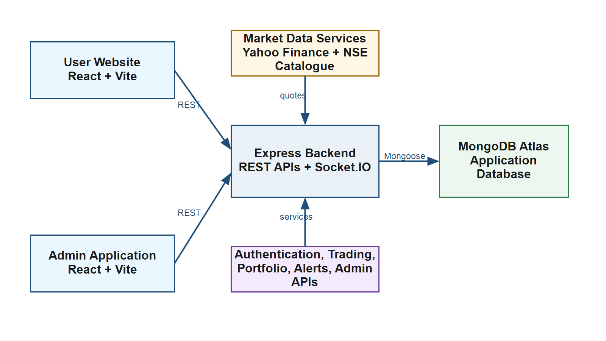
The major modules are Authentication, User Account, NSE Instrument Search, Market Data, Stock Detail and Historical Charts, Trading/Order Management, Portfolio, Positions, Transactions, Watchlist, Alerts, Real-Time Socket.IO Updates, Competitions, Administration, and Password Recovery.
Each module is implemented around clear data ownership boundaries. User-facing screens do not mutate financial records directly. Trading changes are routed through backend services to maintain consistency.
Table 6.1 - Module Summary
| Module | Purpose | Input | Output |
|---|---|---|---|
| Authentication | Secure access | Credentials | Authenticated session |
| User Account | Profile maintenance | Name, email, mobile, preferences | Updated profile |
| NSE Instrument Search | Stock discovery | Search query | Matching symbols |
| Market Data | Quote/history display | Symbol/timeframe | Market information |
| Trading/Orders | Virtual order placement | Symbol, side, quantity, type | Order status |
| Portfolio | Holding management | Executed orders | Holdings and value |
| Transactions | Executed trade ledger | Executed order | Transaction record |
| Watchlist | Track selected stocks | Symbols/lists | Personal watchlist |
| Alerts | Price-level tracking | Symbol, target, condition | Alert status |
| Administration | Monitoring | Admin API requests | Admin dashboards |
MongoDB stores application data through Mongoose models. The database stores only virtual trading and account data needed by the platform. It does not store bank account details, PAN card details, demat credentials, or real-money payment data.
Important collections include users, refreshTokens, instruments, orders, transactions, portfolios, watchlists, alerts, and competitions. Key constraints include unique email, unique transaction per order, and unique portfolio row per user and symbol.
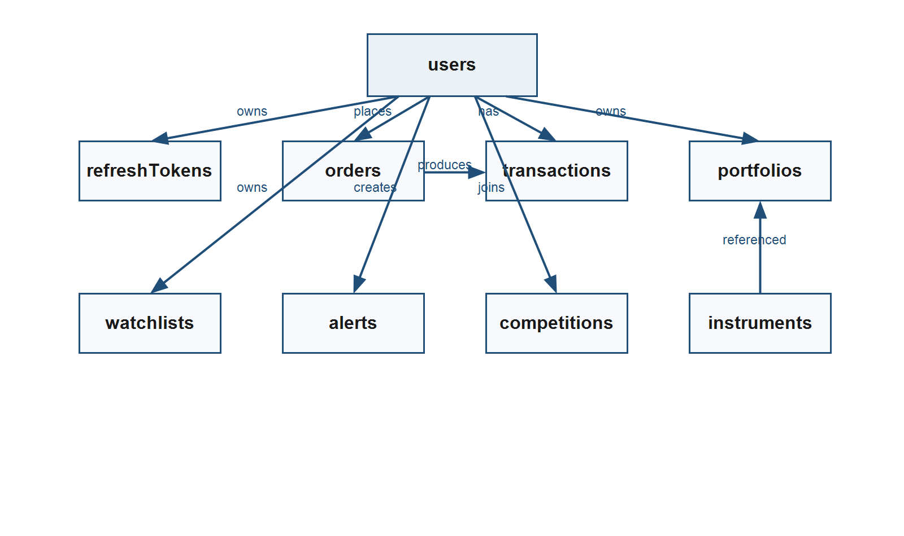
The trading engine simulates stock order execution using virtual funds and holdings. It supports Market, Limit, Stop-Loss, and Stop-Limit orders. The engine checks market session, quote validity, user funds, user holdings, and order lifecycle conditions before changing financial records.
A Market order executes during active market hours when an executable quote is available. A Limit order executes only when the market price satisfies the configured limit condition. A Stop-Loss order remains pending until its trigger price is reached. A Stop-Limit order moves from Pending to Triggered and then Executes only when both trigger and limit conditions are satisfied.
The market-session service uses Asia/Kolkata and the configured session of 09:15 to 15:30 on weekdays, excluding configured NSE holidays. Stale, missing, invalid, unavailable, or mismatched quotes are rejected or skipped.
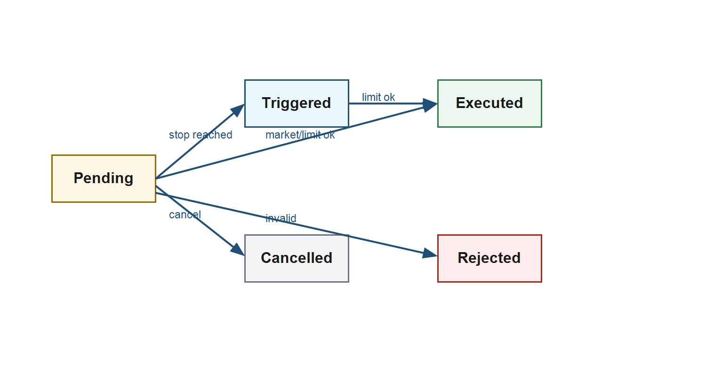
Portfolio accounting is updated only after an order executes. A BUY order debits virtual cash and increases holdings. A SELL order credits virtual cash and reduces or closes holdings.
Weighted Average Price = ((Old Quantity x Old Average Price) + (New Quantity x Buy Price)) / (Old Quantity + New Quantity). Unrealized P&L = (Current Market Price - Average Price) x Quantity. Realized P&L = (Sell Price - Average Buy Price) x Sold Quantity.
Partial selling reduces the holding quantity while retaining the existing average buy price for the remaining holding. Full selling removes the holding row and records the transaction history.
Trading systems must protect users from duplicate execution, negative balances, and negative holdings. Trade Abhyas includes concurrency controls in the virtual order engine.
MongoDB transactions group order, transaction, balance, and portfolio changes. Atomic balance mutation prevents overspending during concurrent BUY orders. Latest holding revalidation prevents overselling during concurrent SELL orders. Processing tokens prevent duplicate order claims.
The order service automated test suite completed with Total: 10, Passed: 10, Failed: 0. Coverage includes Market, Limit, Stop-Loss, Stop-Limit, cancellation, rejected orders, concurrent BUY/SELL, duplicate processing, and stale recovery.
Table 10.1 - Order Service Test Result
| Metric | Result |
|---|---|
| Total tests | 10 |
| Passed | 10 |
| Failed | 0 |
| Coverage | Market, Limit, Stop-Loss, Stop-Limit, cancellation, rejected orders, concurrent BUY/SELL, duplicate processing, stale recovery |
Passwords are hashed using bcrypt before storage. JWT access tokens and refresh sessions are stored through HTTP-only cookies. Refresh tokens are stored as hashes in the database. Admin APIs require authenticated users with the admin role.
Password reset uses hashed reset tokens, expiry, and session revocation after reset. CORS is configured through allowed frontend origins. Production cookie configuration supports secure and SameSite settings. Secrets such as database strings, JWT secrets, and email provider keys are supplied through environment variables.
Because Trade Abhyas is a virtual trading platform, it does not ask for bank credentials, PAN card details, demat account details, brokerage credentials, UPI information, or real-money settlement data.
Testing covered authentication, admin authorization, trading behavior, concurrency, audit checks, local API flows, Socket.IO behavior, watchlist, alerts, password reset, and frontend builds.
Authentication verification included registration, login, invalid login, session persistence, refresh, and logout. Admin authorization verification included admin authenticated -> 200, normal user authenticated -> 403, and logged out -> 401.
Financial integrity audit result: executed orders without transactions 0; transactions without valid executed orders 0; duplicate transactions 0; negative balances 0; negative holdings 0; duplicate holdings 0; portfolio/position mismatches 0; invalid financial mutations 0; invalid symbols 0; ownership mismatches 0; status issues 0.
Table 13.1 - Testing Summary
| Area | Verified Result |
|---|---|
| Authentication | Registration, login, invalid login, session persistence, refresh, logout |
| Admin authorization | Admin authenticated -> 200; normal user -> 403; logged out -> 401 |
| Trading | BUY, SELL, Limit, Stop-Loss, Stop-Limit, oversell, insufficient balance, market closed, cancellation |
| Concurrency | 10/10 order-service tests passed |
| Financial audit | Zero issues across executed orders, transactions, balances, holdings, duplicates, ownership, and status checks |
| Local E2E | Auth, search, quote/chart, BUY/SELL, portfolio, orders, transactions, Socket.IO, watchlist, alerts, password reset, admin authorization |
Current limitations include paper trading only, no real stock exchange execution, NSE equity-focused scope, no derivatives, no margin/leverage, dependence on third-party market data, quote timing differences from exchange-grade feeds, required NSE holiday configuration, deferred production deployment, and deferred production transactional-email credentials.
Future scope includes production deployment, transactional email configuration, mobile application, advanced analytics, expanded competition features, educational lessons, additional market segments, improved market-data infrastructure, and advanced portfolio insights.
Trade Abhyas successfully demonstrates a complete virtual stock trading platform suitable for a B.Tech Mini Project. It combines realistic paper trading workflows, NSE market information, secure authentication, realistic order lifecycles, accurate portfolio accounting, real-time updates, financial integrity checks, concurrency-safe execution, and administrative monitoring.
The project avoids real-money brokerage claims and remains focused on educational paper trading. Testing and audit results confirm that the core trading flow is technically consistent and ready for academic demonstration.
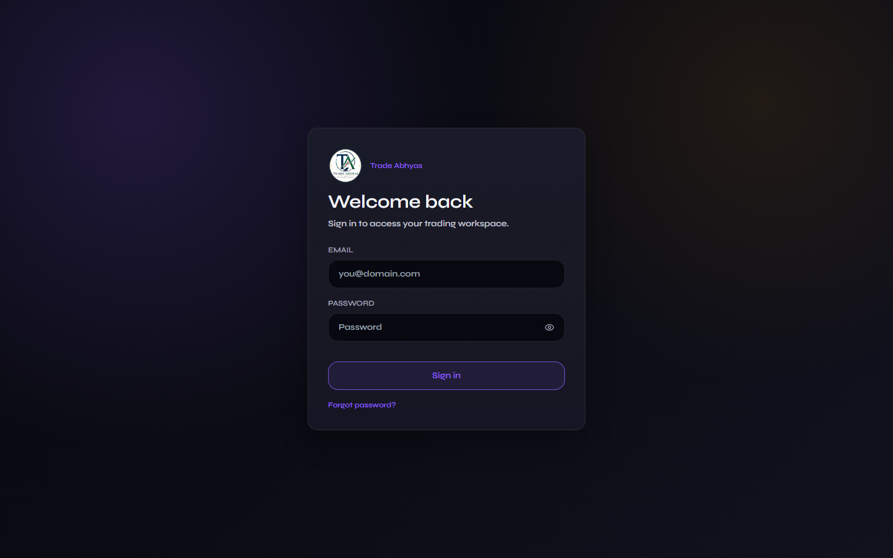
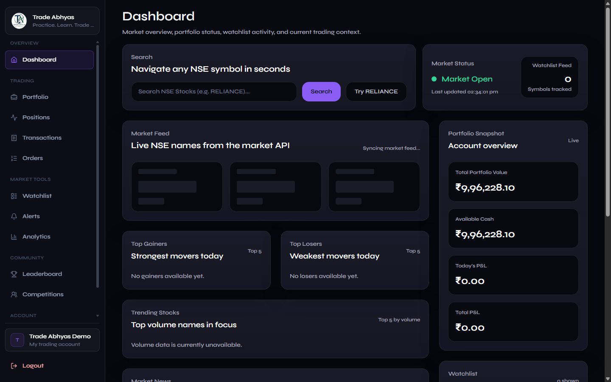
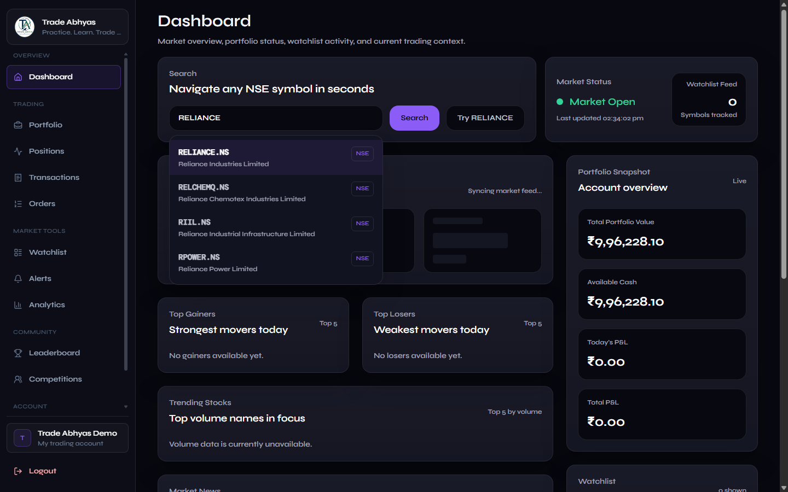
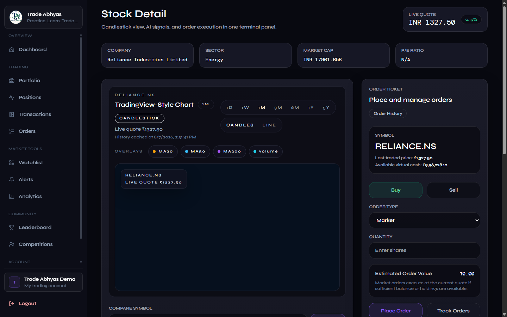
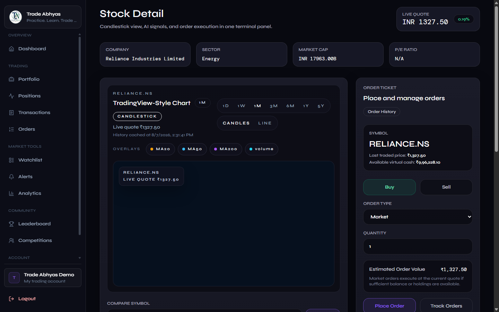
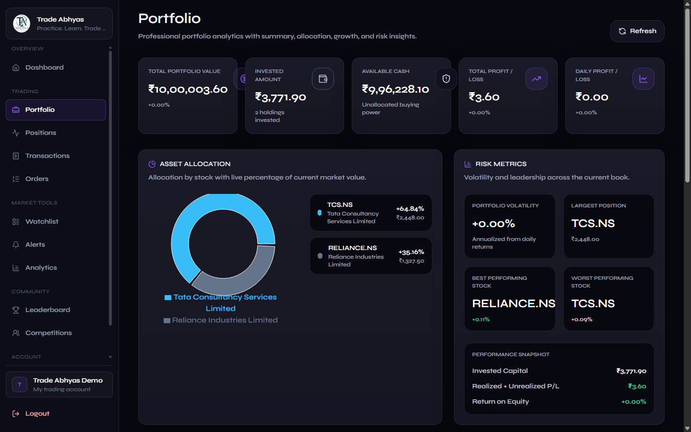
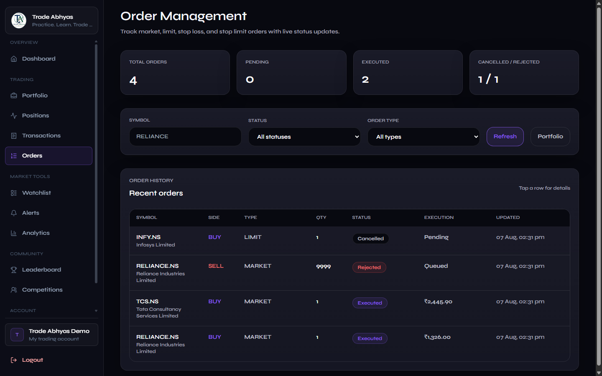
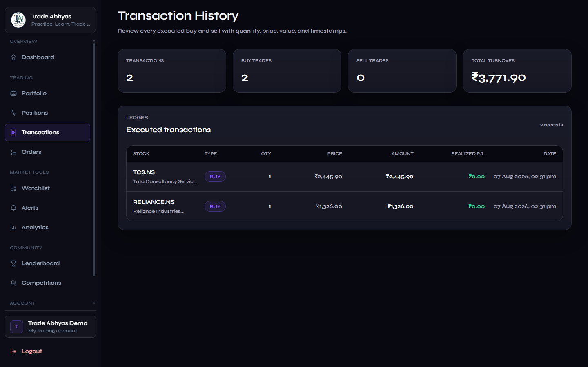
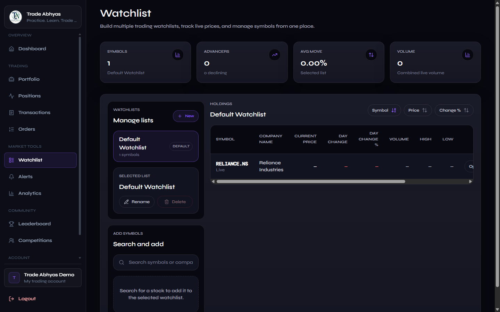
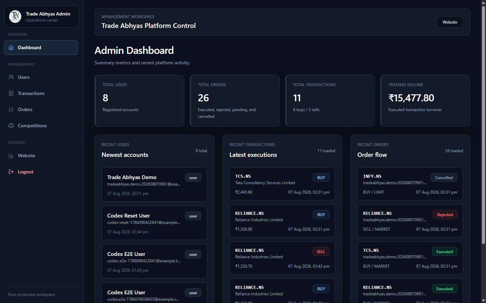
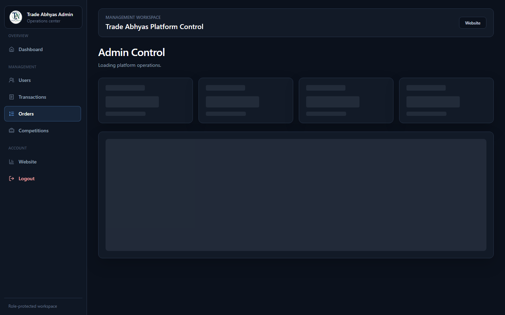
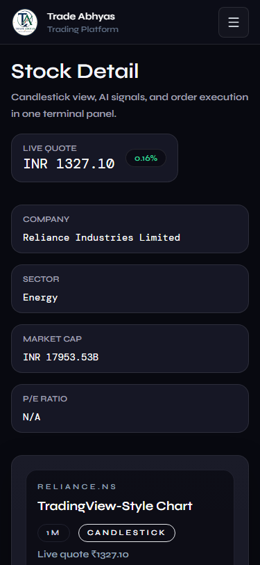